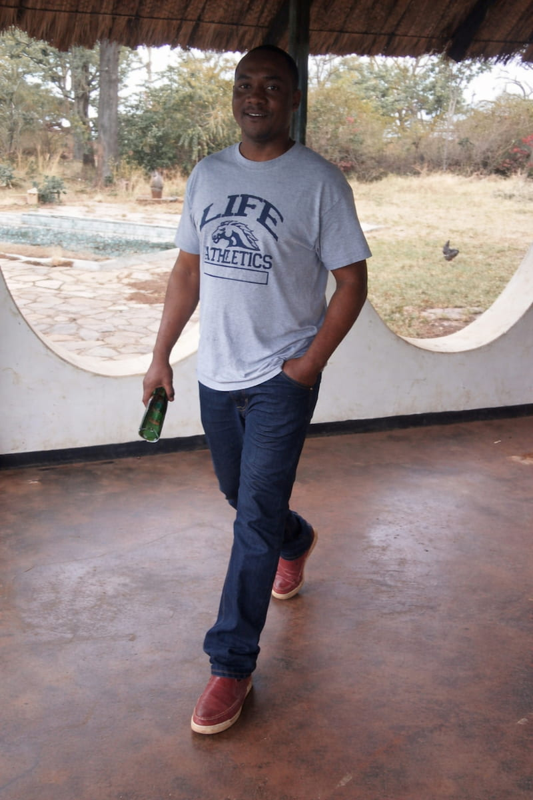

Lloyd Nyambo | WDD 130

Hello! My name is Lloyd Nyambo and I am learning web development in WDD 130. I enjoy building websites and improving my coding skills. I also enjoy learning about technology, designing web pages, and practicing HTML and CSS to become a better developer.